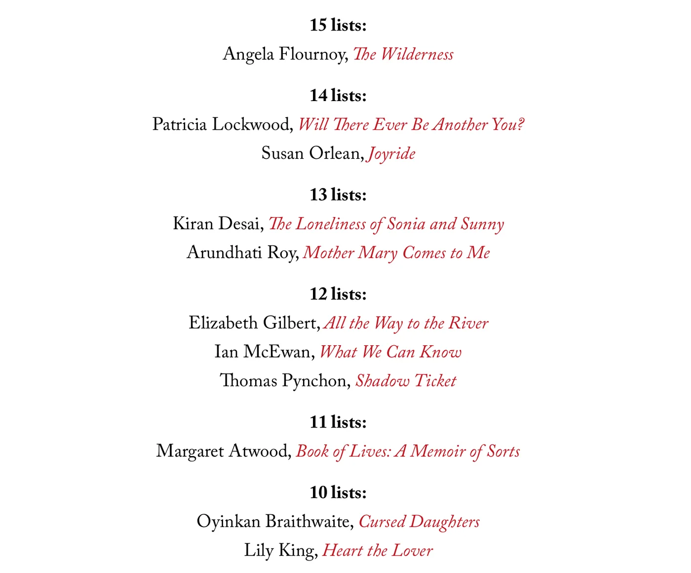
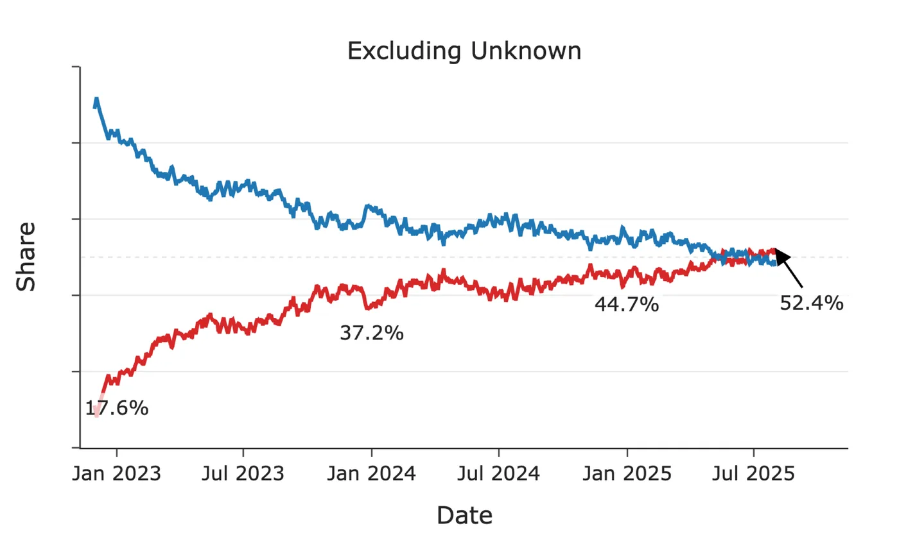

“The Power Of Asking ‘How?’”
““How” questions can evoke responses that include crucial information about social processes, history, networks, decision-making, and uncertainty.”
A weekly collection of education-related news from around the web.
← Previous Issue · Next Issue →
500 issues of The Educator’s Notebook!
500?! What? How is that possible? Well, I’ve learned a lot. I hope you have, too. Here’s to continued learning!
This week’s features include an excellent post about why the question “how” is so useful. While our world grows ever more complicated, it’s often the simplest things that lead to the most effective learning. Good questions are among those simplest of things. This week’s other feature offers a balm for divisive times, looking back at the resilience of US history through the eyes of a diverse group of political leaders.
In other news, the article in the Language section about em dashes in AI generated prose is just the beginning of what is likely to be decades of questions about the way we (humans) do things in the world vs the way machines do things in the world. Right now, we see it most visibly in writing, but as machines take on more and more human tasks and behaviors, the question of human/machine distinctions is going to begin appearing across our personal and professional lives.
Also: “Open world” games are games that don’t require players to follow a story. Players can just explore and discover and try new things. The chemistry lab with AI in the STEM section feels like open world education: give kids some materials and an AI lab partner — and invite them to do some science. More, please!
I’m struck — and dismayed — by how many articles in this issue have a politicized element. As regular readers know, I generally avoid politics and other sensational news in service of posts that are directly useful, but when they have an impact on the classroom or school leadership, it feels important to include. Still, there’s a good amount of pedagogy this week, not only in the pedagogy section, but also in STEM and the AI Update.
These and more, enjoy!
Peter
PS. I’m very excited about the forthcoming book, and I look forward to attending the following acronyms and initialisms to share more about it. More details on these to come. Let me know if you’ll be at one, and I’d love to say hello.
- October 15-16 – MASS CUE (Foxborough, MA)
- October 23 – NAMT (NYC)
- January 11-14 – FETC (Orlando, FL)
- February 25-27 – NAIS (Seattle, WA)

““How” questions can evoke responses that include crucial information about social processes, history, networks, decision-making, and uncertainty.”
“Amid escalating partisan battles over American history, three former presidents are joining with historians and other prominent figures from across the political spectrum, in an online history essay series aimed at exploring the resilience of American democracy. In Pursuit, as the project is called, will kick off on Presidents’ Day next year, with an essay by George W. Bush on George Washington, the only U.S. president who did not represent a political party. The series, which will be freely available on Substack, will run forward chronologically through the other presidents, and include Barack Obama writing on Abraham Lincoln and Bill Clinton on Theodore Roosevelt.”
“WWe all love to criticize. Unfortunately, we also hate being criticized. That leads to a happiness problem in the giant, constant, panoramic review that is the experience of modern life… Just as important for getting along with others is the ability to give compliments. The quality of our relationships, in fact, depends on the ratio of praise to criticism that is exchanged.”
“Distinct from loneliness—which is alone time we don’t want—solitude is chosen, and meant to be rejuvenating and generative.”
"We need skilled human programmers who can guide, control, and critically evaluate AI outputs."
“The contrarian question isn't just a filter—it's the operating system for how neurons, humans, and universes optimize themselves through deliberate deviation.”
“In 1995 President Nelson Mandela of South Africa asked me to serve as a judge on the International Criminal Tribunal for Rwanda. The judicial panel over which I presided convicted three Rwandans of genocide. So I understand the word “genocide,” and it is not one I use lightly. It is the deliberate attempt to destroy, in whole or in part, a people. It represents the most serious violation of our shared humanity and the gravest breach of international law. Today the United Nations commission that I lead is publishing its legal analysis of Israel’s conduct in the Gaza Strip. Our conclusion is stark: Israel has committed genocide against Palestinians in Gaza.”
“A collaborative resource developed by the students and instructor of EDST 520: Experiential Pedagogies”
“This season, I processed 28 lists, which collectively recommended a total of 466 books. 95 of these were included 3 times or more, and these I present to you in descending order of popularity. The list of list surveyed is, as ever, at the bottom. Have fun, and see you in the winter.”
“These scenarios are not abstract to me. As a building administrator, I had to think through how to prevent a mass shooting—consulting with police, analyzing our policies, and wondering where in our budget we could find millions to replace windows. Through it all, I’ve come to a conclusion that I don’t like: There’s not much schools can do to prevent mass shootings. The best, or even the only, approach may be to focus on the everyday threats to student safety that receive far less attention.”
“Then we introduced the challenge: they would conduct a chemistry experiment AND learn to use AI as a research tool. The ground rules were simple—use AI to ask any questions needed to fill out their worksheet and design an experiment using the provided compounds. All approved experimental protocols would be conducted the next day.”
“This explosion of intellectual energy didn't just appear out of thin air. The new ideas, I argued, were themselves flowing through the city along with silks and spices from the East, because Baghdad sat at the nexus of the global trade routes of the age. But I'd missed one of the key technological platforms that made all that creativity possible: the arrival of relatively cheap, mass-produced paper, an invention that had made its way west along the Silk Road from China.”
“Many of us have to-do lists. Some of us live by them and use them daily. But how many of us have a stop-doing list? If you constantly feel overwhelmed, stuck, or spread too thin — despite checking off task after task—it might be time to flip the script. A stop-doing list can be a powerful, even life-changing tool. It forces you to look critically at where your time, energy and focus are going — and where they shouldn’t be going.”
“The purpose of this series is to generate conversations among educators who want to understand the roots of our dilemma; who want to collectively lament the loss of a worldview that creates incoherent schools; and who want to hospice dying systems while simultaneously midwifing a wriggling and unbound and emerging future.”
You know it’s a big week when there are four (!) featured posts. Originally, there were six (!), but that was just too many.
Two of this week’s features are about the accelerating impact of socially and emotionally engaging AI: one is about the destructive influence of AI on some marriages, and another is about the spiritual support some people (millions of people) are finding in AI spiritual guides — across faiths. Notably, the narrative in the faith realm is similarly to the one in the educational realm: it’s seen as ok… so long as it complements, but does not replace, the main work of faith (or learning) communities. These are good principles, but the, uh, devil is in the details. Identifying the boundaries and building systems to maintain them is the important work ahead. Keep an eye out for more information on my forthcoming book in regards to how we can define and support these boundaries in education.
Also in the features: OSU requires all incoming freshman to take a course on AI. The goal is that every student graduates with 1) expertise in their major, and 2) expertise in applying AI to their major. I think this is a very good thing (assuming the course includes effective AI literacy, the building of responsible habits, and an understanding of the ethical implications of AI use). Then see also OpenAI’s collection of 100 recommended prompts from college students. This is AI in action.
Also this week: Google is taking enormous leaps with AI use, OpenAI and Anthropic both release reports on how people are using AI, and more. I particularly appreciated the NYT article summarizing what it is that AI companies are reaching for. Check it out in the Industry Development section.
These and more, enjoy!
Peter

“App founders said they considered the technology to be a digital chaplaincy, a tool that is helping millions of people, both inside and outside of faith, express themselves spiritually. Several religious leaders said they so far supported people using the chatbots, as long as they complement, but do not replace, the work of faith communities. “There is a whole generation of people who have never been to a church or synagogue,” said Rabbi Jonathan Romain, a leader within Britain’s Reform Jewish movement. “Spiritual apps are their way into faith.””
“More than 70 college students across North America created and ranked these chats in our ChatGPT Lab. Some chats were also provided by content creators on social media.”
“The goal of the initiative, AI Fluency, is that students, beginning with the class of 2029, will graduate and be fluent in both their major and AI... Beginning this year, all freshmen are required to take a course in generative AI and multiple workshops aimed at real-world applications to help them master the technology.”
“As AI bots like ChatGPT become inextricably tangled with people's private and public lives, it's causing unpredictable new crises. One of these collision points is in romantic relationships, where an uncanny dynamic is unfolding across the world: one person in a couple becomes fixated on ChatGPT or another bot — for some combination of therapy, relationship advice, or spiritual wisdom — and ends up tearing the partnership down as the AI makes more and more radical interpersonal suggestions.”
“Textbooks are a cornerstone of education, but they have a fundamental limitation: they are a one-size-fits-all medium. Any new material or alternative representation requires arduous human effort, so that textbooks cannot be adapted in a scalable manner. We present an approach for transforming and augmenting textbooks using generative AI, adding layers of multiple representations and personalization while maintaining content integrity and quality. We refer to the system built with this approach as Learn Your Way. We report pedagogical evaluations of the different transformations and augmentations, and present the results of a a randomized control trial, highlighting the advantages of learning with Learn Your Way over regular textbook usage.”
“Are they building an A.I. system as smart as humans? A godlike machine that will change the world if it doesn’t destroy humanity first? Are they working on fancier versions of software they have been selling for decades? Is all this money going into a bold plan to create fake online friends and more effective ads? Or are they just afraid of missing out on what everyone else is doing? Here is a rundown of the visions, from the very plausible to the fantastical and why they’re pursuing those ideas:”